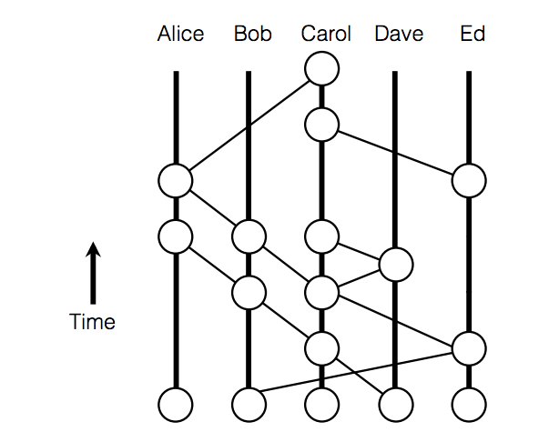

Introduction to Applications of Byzantine Consensus Mechanisms
- Introduction
- Brief Survey of Byzantine Fault-tolerant Consensus Mechanisms
- Permissioned Byzantine Fault-tolerant Protocols
- Permissionless Byzantine Fault-tolerant Protocols
- References
- Appendices
- Contributors
Introduction
When considering how Tari will potentially build its second layer, an analysis of the most promising Byzantine Consensus Mechanisms and their applications was sought.
Important to consider is the "scalability trilemma". This phrase, referred to in [1], takes into account the potential trade-offs regarding decentralization, security and scalability:
-
Decentralization. A core principle on which the majority of the systems are built, taking into account censorship-resistance and ensuring that everyone, without prejudice, is permitted to participate in the decentralized system.
-
Scalability. Encompasses the ability of the network to process transactions. Thus, if a public blockchain is deemed to be efficient, effective and usable, it should be designed to handle millions of users on the network.
-
Security. Refers to the immutability of the ledger and takes into account threats of 51% attacks, Sybil attacks, Distributed Denial of Service (DDoS) attacks, etc.
Through the recent development of this ecosystem, most blockchains have focused on two of the three factors, namely decentralization and security, at the expense of scalability. The primary reason for this is that nodes must reach consensus before transactions can be processed [1].
This report examines proposals considering Byzantine Fault-tolerant (BFT) consensus mechanisms, and considers their feasibility and efficiency in meeting the characteristics of scalability, decentralization and security. In each instance, the following are assessed:
- protocol assumptions;
- reference implementations; and
- discernment regarding whether the protocol may be used for Tari as a means to maintain the distributed asset state.
Appendix A contains terminology related to consensus mechanisms, including definitions of Consensus; Binary Consensus; Byzantine Fault Tolerance; Practical Byzantine Fault-tolerant Variants; Deterministic and Non-deterministic Protocols; and Scalability-Performance Trade-off.
Appendix B discusses timing assumptions, including degrees of synchrony, which range from Synchrony and Partial Synchrony to Weak Synchrony, Random Synchrony and Asynchrony; as well as the problem with timing assumptions, including Denial of Service (DoS) Attack, FLP Impossibility and Randomized Agreement.
Brief Survey of Byzantine Fault-tolerant Consensus Mechanisms
Many peer-to-peer, online, real-time strategy games use a modified lockstep protocol as a consensus protocol in order to manage the game state between players in a game. Each game action results in a game state delta broadcast to all other players in the game, along with a hash of the total game state. Each player validates the change by applying the delta to their own game state and comparing the game state hashes. If the hashes do not agree, then a vote is cast, and those players whose game states are in the minority are disconnected and removed from the game (known as a desync) [2].
Permissioned Byzantine Fault-tolerant Protocols
Background
Byzantine agreement schemes are considered well suited for permissioned blockchains, where the identity of the participants is known. Examples include Hyperledger and Tendermint. Here, the Federated Consensus Algorithm is implemented [3].
Protocols
Hyperledger Fabric
Hyperledger Fabric (HLF) began as a project under the LinX Foundation in early 2016 [4]. The aim was to create an open-source, cross-industry, standard platform for distributed ledgers. HLF is an implementation of a distributed ledger platform for running smart contracts and leveraging familiar and proven technologies. It has a modular architecture, allowing pluggable implementations of various functions. The distributed ledger protocol of the fabric is run on the peers. The fabric distinguishes peers as:
- validating peers (they run the consensus algorithm, thus validating the transactions); and
- non-validating peers (they act as a proxy that helps in connecting clients to validating peers).
The validating peers run a BFT consensus protocol for executing a replicated state machine that accepts deploy, invoke and query transactions as operations [5].
The blockchain's hash chain is computed based on the executed transactions and resulting persistent state. The replicated execution of chaincode (the transaction that involves accepting the code of the smart contract to be deployed) is used for validating the transactions. It is assumed that among n validating peers, at most f<n/3 (where f is the number of faulty nodes and n is the number of nodes present in the network) may behave arbitrarily, while others will execute correctly, thus adapting to concept BFT consensus. Since HLF proposes to follow a Practical Byzantine Fault-tolerant (PBFT) consensus protocol, the chaincode transactions must be deterministic in nature, otherwise different peers might have different persistent states. The SIEVE protocol is used to filter out the non-deterministic transactions, thus assuring a unique persistent state among peers [5].
While being redesigned for a v1.0 release, the format's goal was to achieve extensibility. This version allowed for modules such as membership and consensus mechanism to be exchanged. Being permissioned, this consensus mechanism is mainly responsible for receiving the transaction request from the clients and establishing a total execution order. So far, these pluggable consensus modules include a centralized, single order for testing purposes, and a crash-tolerant ordering service based on Apache Kafka [3].
Tendermint
Overview
Tendermint Core is a BFT Proof-of-Stake (PoS) protocol, which is composed of two protocols in one: a consensus algorithm and a peer-to-peer networking protocol. Inspired by the design goal behind Raft, the authors of [6] specified Tendermint as being an easy-to-understand, developer-friendly algorithm that can do algorithmically complex systems engineering.
Tendermint is modeled as a deterministic protocol, live under partial synchrony, which achieves throughput within the bounds of the latency of the network and individual processes themselves.
Tendermint rotates through the validator set, in a weighted round-robin fashion. The higher the stake (i.e. voting power) that a validator possesses, the greater its weighting; and the more times, proportionally, it will be elected as a leader. Thus, if one validator has the same amount of voting power as another validator, they will both be elected by the protocol an equal amount of times [6].
Critics have argued that Tendermint is not decentralized, and that one can distinguish and target leadership, launching a DDoS attack against them, and sniffling the progression of the chain. Although Sentry Architecture (containing sentry nodes, refer to Sentry Nodes) has been implemented in Tendermint, the argument regarding the degree of decentralization is still questionable.
Sentry Nodes
Sentry nodes are guardians of a validator node and provide validator nodes with access to the rest of the network. They are well connected to other full nodes on the network. Sentry nodes may be dynamic, but should maintain persistent connections to some evolving random subset of each other. They should always expect to have direct incoming connections from the validator node and its backup(s). They do not report the validator node's address in the Peer Exchange Reactor (PEX) and may be more strict about the quality of peers they keep.
Sentry nodes belonging to validators that trust each other may wish to maintain persistent connections via Virtual Private Network (VPN) with one another, but only report each other sparingly in the PEX [7].
Permissionless Byzantine Fault-tolerant Protocols
Background
BFT protocols face several limitations when utilized in permissionless blockchains. They do not scale well with the number of participants, resulting in performance deterioration for the targeted network sizes. In addition, they are not well established in this setting, thus they are prone to security issues such as Sybil attacks. Currently, there are approaches that attempt to circumvent or solve this problem [3].
Protocols and Algorithms
Paxos
The Paxos family of protocols includes a spectrum of trade-offs between the number of processors, number of message delays before learning the agreed value, activity level of individual participants, number of messages sent and types of failures. Although the FLP theorem (named after the authors Michael J. Fischer, Nancy Lynch, and Mike Paterson) states that there is no deterministic fault-tolerant consensus protocol that can guarantee progress in an asynchronous network, Paxos guarantees safety (consistency), and the conditions that could prevent it from making progress are difficult to provoke [8].
Paxos achieves consensus as long as there are f failures, where f < (n-1)/2. These failures cannot be Byzantine, otherwise the BFT proof would be violated. Thus it is assumed that messages are never corrupted, and that nodes do not collude to subvert the system.
Paxos proceeds through a set of negotiation rounds, with one node having "Leadership" status. Progress will stall if the leader becomes unreliable, until a new leader is elected, or if an old leader suddenly comes back online and a dispute between two leader nodes arises.
Chandra-Toueg
The Chandra–Toueg consensus algorithm [9], published in 1996, relies on a special node that acts as a failure detector. In essence, it pings other nodes to make sure they are still responsive. This implies that the detector stays online and that the detector must continuously be made aware when new nodes join the network.
The algorithm itself is similar to the Paxos algorithm, which also relies on failure detectors and requires f<n/2, where n is the total number of processes.
Raft
Raft is a consensus algorithm designed as an alternative to Paxos. It was meant to be more understandable than Paxos by means of separation of logic, but it is also formally proven safe and offers some additional features [10].
Raft achieves consensus via an elected leader. Each follower has a timeout in which it expects the heartbeat from the leader. It is thus a synchronous protocol. If the leader fails, an election is held to find a new leader. This entails nodes nominating themselves on a first-come, first-served basis. Hung votes require the election to be scrapped and restarted. This suggests that a high degree of cooperation is required by nodes, and that malicious nodes could easily collude to disrupt a leader and then prevent a new leader from being elected. Raft is a simple algorithm, but is clearly unsuitable for consensus in cryptocurrency applications.
While Paxos, Raft and many other well-known protocols tolerate crash faults, BFT protocols, beginning with PBFT, tolerate even arbitrary corrupted nodes. Many subsequent protocols offer improved performance, often through optimistic execution that provides excellent performance when there are no faults; when clients do not contend much; and when the network is well behaved, and there is at least some progress.
In general, BFT systems are evaluated in deployment scenarios where latency and the central processing unit (CPU) are the bottleneck. Thus the most effective protocols reduce the number of rounds and minimize expensive cryptographic operations.
In a recent line of work, [11] advocated improvement of the worst-case performance, providing service quality guarantees even when the system is under attack, even if this comes at the expense of performance in the optimistic case. However, although the "Robust BFT protocols in this vein gracefully tolerate comprised nodes, they still rely on timing assumptions about the underlying network" [28]. Thus, focus shifted to asynchronous networks.
Hashgraph
Background
The Hashgraph consensus algorithm [12] was released in 2016. It claims Byzantine Fault Tolerance (BFT) under complete asynchrony assumptions, no leaders, no round robin, no Proof-of-Work (PoW), eventual consensus with probability one, and high speed in the absence of faults.
Hashgraph is based on the gossip protocol, which is a fairly efficient distribution strategy that entails nodes randomly sharing information with each other, similar to how human beings gossip.
Nodes jointly build a Hashgraph reflecting all of the gossip events. This allows Byzantine agreement to be achieved through virtual voting. Alice does not send Bob a vote over the Internet. Instead, Bob calculates what vote Alice would have sent, based on his knowledge of what Alice knows.
Hashgraph uses digital signatures to prevent undetectable changes to transmitted messages. It does not violate the FLP theorem, since it is non-deterministic.
The Hashgraph has some similarities to a blockchain. To quote the white paper: "The Hashgraph consensus algorithm is equivalent to a blockchain in which the 'chain' is constantly branching, without any pruning, where no blocks are ever stale, and where each miner is allowed to mine many new blocks per second, without proof-of-work" [12].
Because each node keeps track of the Hashgraph, there is no need to have voting rounds in Hashgraph; each node already knows what all of its peers will vote for, and thus consensus is reached purely by analyzing the graph.
Gossip Protocol
The gossip protocol works like this:
- Alice selects a random peer node, say Bob, and sends him everything she knows. She then selects another random node and repeats the process indefinitely.
- Bob, on receiving Alice's information, marks this as a gossip event and fills in any gaps in his knowledge from Alice's information. Once done, he continues gossiping, using his updated information.
The basic idea behind the gossip protocol is the following: A node wants to share some information with the other nodes in the network. Then, periodically, it randomly selects a node from the set of nodes and exchanges the information. The node that receives the information then randomly selects a node from the set of nodes and exchanges the information, and so on. The information is periodically sent to N targets, where N is the fanout [13].
The cycle is the number of rounds to spread the information. The fanout is the number of nodes a node gossips with in each cycle.
With a fanout = 1, $O(LogN)$ cycles are necessary for the update to reach all the nodes. In this way, information spreads throughout the network in an exponential fashion [12].
The gossip history can be represented as a directed graph, as shown in Figure 1.

Figure 1: Gossip Protocol Directed Graph
Hashgraph introduces a few important concepts that are used repeatedly in later BFT consensus algorithms: famous witnesses and strongly seeing.
Ancestors
If an event (x1) comes before another event (x2) and they are connected by a line, the older event is an ancestor of that event. If both events were created by the same node, then x1 is a self-ancestor of x2.
Note: The gossip protocol defines an event as being a (self-)ancestor of itself!
Seeing
If an event x1 is an ancestor of x2, then we say that x1 sees x2, as long as the node is not aware of any forks from x2. So in the absence of forks, all events will see all of their ancestors.
+-----> y
|
x +--+
|
+-----> z
In the preceding example, x is an ancestor of both y and z. However, because there is no ancestor relationship between y and z, the seeing condition fails, and so y cannot see x, and z cannot see x.
It may be the case that it takes time before nodes in the protocol detect the fork. For instance, Bob may create z and y, but share z with Alice and y with Charlie. Both Alice and Charlie will eventually learn about the deception, but until that point, Alice will believe that y sees x, and Charlie will believe that z sees x. This is where the concept of strongly seeing comes in.
Strongly Seeing
If a node examines its Hashgraph and notices that an event z sees an event x, and not only that, but it can draw an ancestor relationship (usually via multiple routes) through a super-majority of peer nodes, and that a different event from each node also sees x, then it is said that according to this node, z strongly sees x. The example in Figure 2 comes from [12]:

Figure 2: Illustration of Strongly-seeing
Construct of Gossiping
The main consensus algorithm loop consists of every node (Alice), selecting a random peer node (Bob) and sharing their graph history. Now Alice and Bob have the same graph history.
Alice and Bob both create a new event with the new knowledge they have just learnt from their peer. Alice repeats this process continuously.
Internal Consensus
After a sync, a node will determine the order for as many events as possible, using three procedures. The algorithm uses constant n (the number of nodes) and a small constant value c>2.
- Firstly, we have the Swirlds Hashgraph consensus algorithm. Each member runs this in parallel. Each sync brings in new events, which are then added to the Hashgraph. All known events are then divided into rounds. Then the first events in each round are decided on as being famous or not (through purely local Byzantine agreement with virtual voting). Then the total order is found on those events for which enough information is available. If two members independently assign a position in history to an event, they are guaranteed to assign the same position, and guaranteed to never change it, even as more information comes in. Furthermore, each event is eventually assigned such a position, with a probability of one [12].
in parallel:
loop
sync all known events to a random member
end loop
loop
receive a sync
create a new event
call divideRounds
call decideFame
call findOrder
end loop
- Secondly, we have the divideRounds procedure. As soon as an event x is known, it is assigned a round number x.round, and the Boolean value x.witness is calculated, indicating whether it is the first event that a member created in that round [12].
for each event x
r ← max round of parents of x ( or 1 if none exist )
if x can strongly see more than 2/3*n round r witnesses
x.round ← r + 1
else
x.round ← r
x.witness ← ( x has no self parent ) || ( x.round > x.selfParent.round )
- Thirdly, we have the decideFame procedure. For each witness event (i.e. an event x where x.witness is true), decide whether it is famous (i.e. assign a Boolean to x.famous). This decision is done by a Byzantine agreement protocol based on virtual voting. Each member runs it locally, on their own copy of the Hashgraph, with no additional communication. The protocol treats the events in the Hashgraph as if they were sending votes to each other, although the calculation is purely local to a member’s computer. The member assigns votes to the witnesses of each round, for several rounds, until more than two-thirds of the population agrees [12].
for each event x in order from earlier rounds to later
x.famous ← UNDECIDED
for each event y in order from earlier rounds to later
if x.witness and y.witness and y.round > x.round
d ← y.round - x.round
s ← the set of witness events in round y.round-1 that y can strongly see
v ← majority vote in s ( is TRUE for a tie )
t ← number of events in s with a vote of v
if d = 1 // first round of the election
y.vote ← can y see x ?
else if d mod c > 0 // this is a normal round
if t > 2* n /3 // if supermajority, then decide
x.famous ← v
y.vote ← v
break // y loop
else // else, just vote
y.vote ← v
else if t > 2* n /3 // this is a coin round
y.vote ← v
else // else flip a coin
y.vote ← middle bit of y.signature
Criticisms
An attempt to address some of the following criticisms has been presented [14]:
- The Hashgraph protocol is patented and is not open source.
- In addition, the Hashgraph white paper assumes that n, the number of nodes in the network, is constant. In practice, n can increase, but performance likely degrades badly as n becomes large [15].
- Hashgraph is not as "fair" as claimed in their paper, with at least one attack being proposed [16].
SINTRA
SINTRA is a Secure INtrusion-Tolerant Replication Architecture used for the coordination in asynchronous networks subject to Byzantine faults. It consists of a collection of protocols and is implemented in Java, providing secure replication and coordination among a group of servers connected by a wide-area network, such as the Internet. For a group consisting of n servers, it tolerates up to $t<n/3$ servers failing in arbitrary, malicious ways, which is optimal for the given model. The servers are connected only by asynchronous point-to-point communication links. Thus, SINTRA automatically tolerates timing failures as well as attacks that exploit timing. The SINTRA group model is static. This means that failed servers must be recovered by mechanisms outside of SINTRA, and the group must be initialized by a trusted process.
The protocols exploit randomization, which is needed to solve Byzantine agreement in such asynchronous distributed systems. Randomization is provided by a threshold-cryptographic pseudorandom generator, a coin-tossing protocol based on the Diffie-Hellman problem. Threshold cryptography is a fundamental concept in SINTRA, as it allows the group to perform a common cryptographic operation for which the secret key is shared among the servers such that no single server or small coalition of corrupted servers can obtain useful information about the key. SINTRA provides threshold-cryptographic schemes for digital signatures, public-key encryption and unpredictable pseudorandom number generation (coin-tossing). It contains broadcast primitives for reliable and consistent broadcasts, which provide agreement on individual messages sent by distinguished senders. However, these primitives cannot guarantee a total order for a stream of multiple messages delivered by the system, which is needed to build fault-tolerant services using the state machine replication paradigm. This is the problem of atomic broadcast and requires more expensive protocols based on Byzantine agreement. SINTRA provides multiple randomized Byzantine agreement protocols, for binary and multi-valued agreement, and implements an atomic broadcast channel on top of agreement. An atomic broadcast that also maintains a causal order in the presence of Byzantine faults is provided by the secure causal atomic broadcast channel [17].
Figure 3 illustrates SINTRA's modular design. Modularity greatly simplifies the construction and analysis of the complex protocols needed to tolerate Byzantine faults.

Figure 3: Design of SINTRA
HoneyBadgerBFT
HoneyBadgerBFT was released in November 2016 and is seen as the first practical asynchronous BFT consensus algorithm. It was designed with cryptocurrencies in mind, where bandwidth is considered scarce, but an abundance of CPU power is available. Thus, the protocol implements public-private key encryption to increase the efficiency of the establishment of consensus. The protocol works with a fixed set of servers to run the consensus. However, this leads to centralization and allows an attacker to specifically target these servers [3].
In its threshold encryption scheme, any one party can encrypt a message using a master public key, and it requires f+1 correct nodes to compute and reveal decryption shares for a ciphertext before the plaintext can be recovered.
The work of HoneyBadgerBFT is closely related to SINTRA, which, as mentioned earlier, is a system implementation based on the asynchronous atomic broadcast protocol from [18]. This protocol consists of a reduction from Atomic Broadcast Channel (ABC) to Asynchronous Common Subset (ACS), as well as a reduction from ACS to Multi-value Validated Agreement (MVBA).
HoneyBadger offers a novel reduction from ABC to ACS that provides better efficiency (by O(N) factor) through batching, while using threshold encryption to preserve censorship resilience. Better efficiency is also obtained by cherry-picking improved instantiations of subcomponents. For example, the expensive MVBA is circumvented by using an alternative ACS along with an efficient reliable broadcast (RBC) [28].
Stellar Consensus Protocol
Stellar Consensus Protocol (SCP) is an asynchronous protocol proposed. It considered to be a global consensus protocol consisting of nomination protocol and ballot protocol. SCP is said to be BFT, by bringing with it the concept of quorum slices and defeated BFT [5].
Each participant forms a quorum of other users, thus creating a trust hierarchy, which requires complex trust decisions [3]. Initially, the nomination proctor is run. During this, new values called candidate values are proposed for agreement. Each node receiving these values will vote for a single value among these. Eventually, it results in unanimously selected values for that slot.
After successful execution of nomination protocol, the nodes deploy the ballot protocol. This involves the federated voting to either commit or abort the values resulting from nomination protocol. This results in externalizing the ballot for the current slot. The aborted ballots are now declared irrelevant. However, there can be stuck states where nodes cannot reach a conclusion regarding whether to abort or commit a value. This situation is avoided by moving it to a higher-valued ballot, and considering it in a new ballot protocol execution. This aids in case a node believes that this stuck ballot was committed. Thus SCP assures avoidance and management of stuck states and provides liveliness.
The concept of quorum slices in case of SCP provides asymptotic security and flexible trust, making it more acceptable than other earlier consensus algorithms utilizing Federated BFT, such as the Ripple protocol consensus algorithm [29]. Here, the user is provided more independence in deciding whom to trust [30].
SCP protocol claims to be free of blocked states, and provides decentralized control, asymptotic security, flexible trust and low latency. However, it does not guarantee safety all the time. If the user node chooses an inefficient quorum slice, security is not guaranteed. In the event of partition or misbehaving nodes, it halts progress of the network until consensus can be reached.
LinBFT
LinBFT is a BFT protocol for blockchain systems. It allows for the amortized communication volume per block O(n) under reasonable conditions (where n is the number of participants) while satisfying deterministic guarantees on safety and liveness. It satisfies liveness in a partially synchronous network.
LinBFT cuts down its O(n4) complexity by implementing changes by O(n): linear view change, threshold signature and verifiable random functions. This is clearly optimal, in that disseminating a block already takes O(n) transmissions.
LinBFT is designed to be implemented for permissionless, public blockchain systems and takes into account anonymous participants without a public-key infrastructure, PoS, rotating leader and dynamic participant set [31]. For instance, participants can be anonymous, without a centralized public key infrastructure (PKI) public key among themselves, and participate in a distributed key generation (DKG) protocol required to create threshold signatures, both of which are communication-heavy processes.
LinBFT is compatible with PoS, which counters Sybil attacks and deters dishonest behavior through slashing [31].
Algorand
The Algorand white paper was released in May 2017. Algorand is a synchronous BFT consensus mechanism, where the blocks are added at a minimum rate [19]. It allows participants to privately check whether they are chosen for consensus participation and requires only one message per user, thus limiting possible attacks [3].
Alogrand scales up to 500,000 users by employing verifiable random functions, which are pseudorandom functions able to provide verifiable proofs that the output of said function is correct [3]. It introduces the concept of a concrete coin. Most of these BFT algorithms require some type of randomness oracle, but all nodes need to see the same value if the oracle is consulted. This had previously been achieved through a _common _coin idea. The concrete coin uses a much simpler approach, but only returns a binary value [19].
Thunderella
Thunderella implements an asynchronous strategy, where a synchronous strategy is used as a fallback in the event of a malfunction [20], thus it achieves both robustness and speed. It can be applied in permissionless networks using PoW. Network robustness and "instant confirmations" require 75% of the network to be honest, as well as the presence of a leader node.
Snowflake to Avalanche
This consensus protocol was first seen in [39]. The paper outlines four protocols that are building blocks forming a protocol family. These leaderless BFT protocols, published by Team Rocket, are built on a metastable mechanism. They are called Slush, Snowflake, Snowball and Avalanche.
The protocols differ from the traditional consensus protocols and the Nakamoto consensus protocols by not requiring an elected leader. Instead, the protocol simply guides all the nodes to consensus.
These four protocols are described as a new family of protocols due to this concept of metastability: a means to establish consensus by guiding all nodes towards an emerging consensus without requiring leaders, while still maintaining the same level of security and inducing a speed that exceeds current protocols.
This is achieved through the formation of "sub-quorums", which are small, randomized samples from nodes on the network. This allows for greater throughputs and sees parallel consensuses running before they merge to form the overarching consensus, which can be seen as similar in nature to the gossip protocol.
With regard to safety, throughput (the number of transactions per second) and scalability (the number of people supported by the network), Slush, Snowflake, Snowball and Avalanche seem to be able to achieve all three. They impart a probabilistic safety guarantee in the presence of Byzantine adversaries and achieve a high throughput and scalability due to their concurrent nature. A synchronous network is assumed.
The current problem facing the design of BFT protocols is that a system can be very fast when a small number of nodes are active, as there are fewer decisions to make. However, when there are many users and an increase in transactions, the system cannot be maintained.
Unlike the PoW implementation, which requires constant active participation from the miners, Avalanche can function even when nodes are dormant.
While traditional consensus protocols require O(n2) communication, their communication complexity ranges from O(kn log n) to O(kn) for some security parameter k<<n. In a sense, Team Rocket highlight that the communication complexity of their protocols is less intensive than that of O(n2) communications, thus making these protocols faster and more scalable.
To backtrack a bit, Big O notation is used in Computer Science to describe the performance or complexity of an algorithm. It describes the worst-case scenario and can be used to describe the execution time required by an algorithm [21]. In the case of consensus algorithms, O describes a finite expected number of steps or operations [22]. For example, O(1) describes an algorithm that will always execute in the same time, regardless of the size of the input data set. O(n) describes an algorithm whose performance will grow linearly and in direct proportion to the size of the input data set. O(n2) represents an algorithm whose performance is directly proportional to the square of the size of the input data set.
The reason for this is O(n2) suggests that the rate of growth of function is determined by n2, where n is the number of people on the network. Thus, the addition of a person exponentially increases the time taken to disseminate the information on the network, while traditional consensus protocols require everyone to communicate with one another, making it a laborious process [32].
Despite assuming a synchronous network, which is susceptible to the DoS attacks, this new family of protocols "reaches a level of security that is simply good enough while surging forward with other advancements" [32].
PARSEC
PARSEC is a BFT consensus algorithm possessing weak synchrony assumptions (highly asynchronous, assuming random delays with finite expected value). Similar to Hashgraph, it has no leaders, no round robin, no PoW and reaches eventual consensus with probability one. It differs from Hashgraph, in that it provides high speed in the absence and presence of faults. Thus, it avoids the structures of delegated PoS (DPoS), which requires a trusted set of leaders, and does not have a round robin (where a permissioned set of miners sign each block).
PARSEC is fully open, unlike Hashgraph, which is patented and closed sourced. The reference implementation of PARSEC, written in Rust, was released a few weeks after the white paper ([33], [23]).
The general problem in reaching Byzantine agreement on any value is reduced to the simple problem of reaching binary Byzantine agreement on the nodes participating in each decision. This has allowed PARSEC to reuse the binary Byzantine agreement protocol (Signature-free Asynchronous Byzantine Consensus) after adapting it to the gossip protocol [34].
Similar to HoneybadgerBFT, this protocol is composed through the additions of interesting ideas presented in literature. Similar to Hashgraph and Avalanche, a gossip protocol is used to allow efficient communication between nodes [33].
Finally, the need for a trusted leader or a trusted setup phase implied in [27] is removed by porting the key ideas to an asynchronous setting [35].
The network is set to N of N instances of the algorithm communicating via randomly synchronous connections. Due to random synchrony, all users can reach an agreement as to what is going on. There is no guarantee for nodes on the timing that they should be receiving messages, and a possibility of up to t Byzantine (arbitrary) failures are allowed, where 3t<N. The instances where no failures have occurred are deemed correct or honest, while the failed instances are termed faulty or malicious. Since a Byzantine failure model allows for malicious behavior, any set of instances containing more than 2/3N of them is referred to as the supermajority.
When a node receives a gossip request, it creates a new event and sends a response back (in Hashgraph, the response was optional). Each gossip event contains [24]:
- The data being transmitted.
- The self-parent (the hash of another gossip event created by the same node).
- The other-parent (a hash of another gossip event created by a different node).
- The Cause for creation, which can be a Request for information, a Response to another node’s request, or an Observation. An observation is when a node creates a gossip event to record an observation that the node made themselves.
- The creator ID (public key).
- The signature – signing the preceding information.
The self-parent and other-parent prevent tampering because they are signed and related to other gossip events [24].
As with Hashgraph, it is difficult for adversaries to interfere with the consensus algorithm, because all voting is virtual and done without sharing details of votes cast. Each node figures out what other nodes would have voted, based on their copy of the gossip graph.
PARSEC also uses the concept of a concrete coin, from Algorand. This is used to break ties, particularly in cases where an adversary is carefully managing communication between nodes in order to maintain a deadlock on votes.
In step 1, nodes try and converge on a "true" result for a set of results. If this is not achieved, they move on to step 2, which is trying to converge on a "false" result. If consensus still cannot be reached, a coin flip is made and they go back to step 1 in another voting round.
Democratic BFT
This is a deterministic Byzantine consensus algorithm that relies on a new weak coordinator. This protocol is implemented in the Red Belly blockchain and is said to achieve 30,000 transactions per second on Amazon Cloud Trials [25]. Through the coupling with an optimized variant of the reduction of multivalve to binary consensus from [26], the Democratic BFT (DBFT) consensus algorithm was generated. It terminates in four message delays in the good case, when all non-faulty processes propose the same value [36].
The term weak coordinator is used to describe the ability of the algorithm to terminate in the presence of a faulty or slow coordinator, unlike previous algorithms that do not have the ability to terminate. The fundamental idea here is to allow processes to complete asynchronous rounds as soon as they receive a threshold of messages, instead of having to wait for a message from a coordinator that may be slow. The resulting algorithm assumes partial synchrony; is resilience and time optimal; and does not require signatures.
Moving away from the impossibility of solving consensus in asynchronous message systems, where processes can be faulty or Byzantine, the technique of randomization or additional synchrony is adopted.
Randomized algorithms can use per-process "local" coins, or a shared common coin to solve consensus probabilistically among n processes despite $t<n/3$ Byzantine processes. When based on local coins, the existing algorithms converge O(n2.5) expected time.
A recent randomized algorithm that does not contain a signature solves consensus in O(1) expected time under a fair scheduler, where O is the binary.
To solve the consensus problem deterministically and prevent the use of the common coin, researchers have assumed partial or eventual synchrony. Here, these solutions require a unique coordinator process, referred to as the leader, in order to remain non-faulty.
There are advantages and disadvantages to this technique:
-
The advantage is that if the coordinator is non-faulty, and if the messages are delivered in a timely manner in an asynchronous round, then the coordinator broadcasts its proposal to all processes and this value is decided after a constant number of message delays.
-
The disadvantage is that a faulty coordinator can dramatically impact the algorithm performance by leveraging the power it has in a round, and imposing its value on all. Non-faulty processes thus have no other choice but to decide nothing in this round.
This protocol sees the use of a weak coordinator, which allows for the introduction of a new deterministic Byzantine consensus algorithm that is time optimal, resilience optimal and does not require the use of signatures. Unlike the classic, strong coordinator, the weak coordinator does not impose its value. It allows non-faulty processes to decide a value quickly, without the need of the coordinator, while helping the algorithm to terminate if non-faulty processes know that they proposed distinct values that might all be decided. In addition, the presence of a weak coordinator allows rounds to be executed optimistically without waiting for a specific message. This is unlike classic BFT algorithms that have to wait for a particular message from their coordinator, and occasionally have to recover from a slow network or faulty coordinator.
With regard to the problem of a slow of Byzantine coordinator, the weak coordinator helps agreement by contributing a value while still allowing termination in a constant number of message delays. It is thus unlike the classic coordinator or the eventual leader, which cannot be implemented in the Binary Byzantine Consensus Algorithm, BAMPn,t[t<n/3].
The validation of protocol was conducted similarly to that of the HoneyBadger blockchain, where "Coin", the randomization algorithm from [27] was used. Using the 100 Amazon Virtual Machines located in five data centers on different continents, it was shown that the DBFT algorithm outperforms that of "Coin", which is known to terminate in O(1) rounds in expectation. In addition, since Byzantine behaviors have been seen to severely affect the performance of strong coordinator-based consensus, four different Byzantine attacks have been tested in the validation.
Summary of Findings
Table 1 highlights the characteristics of the above-mentioned BFT Protocols. Asymptotic Security, Permissionless Blockchain, Timing Assumptions, Decentralized Control, Low Latency and Flexible Trust form part of the value system.
- Asymptotic Security - this depends only on digital signatures (and hash functions) for security.
- Permissionless Protocol - this allows anybody to create an address and begin interacting with the protocol.
- Timing Assumptions - refer to Forms of Timing Assumptions - Degrees of Synchrony.
- Decentralized Control - consensus is achieved and defended by protecting the identity of that node until its job is done, through a leaderless node.
- Low Latency - this describes a computer network that is optimized to process a very high volume of data messages with minimal delay.
- Flexible Trust - where users have the freedom to trust any combinations of parties they see fit.
Table 1: Characteristics of BFT Protocols
| Protocol | Permissionless Protocol | Timing Assumptions | Decentralized Control | Low Latency | Flexible Trust | Asymptotic Security |
|---|---|---|---|---|---|---|
| Hyperledger Fabric (HLF) | Partially synchronous | ✓ | ✓ | |||
| Tendermint | Partially synchronous | ✓ | ✓ | ✓ | ||
| Paxos | ✓ | Partially synchronous | ✓ | ✓ | ✓ | |
| Chandra-Toureg | ✓ | Partially synchronous | ✓ | ✓ | ||
| Raft | ✓ | Weakly synchronous | ✓ | ✓ | ✓ | |
| HashGraph | ✓ | Asynchronous | ✓ | ✓ | ✓ | |
| SINTRA | ✓ | Asynchronous | ✓ | ✓ | ||
| HoneyBadgerBFT | ✓ | Asynchronous | ✓ | ✓ | ✓ | ✓ |
| Stellar Consensus Protocol | ✓ | Asynchronous | ✓ | ✓ | ✓ | ✓ |
| LinBFT | ✓ | Partially synchronous | ✓ | ✓ | ||
| Algorand | ✓ | Synchronous | ✓ | ✓ | ✓ | |
| Thunderella | ✓ | Synchronous | ✓ | ✓ | ✓ | |
| Avalanche | ✓ | Synchronous | ✓ | ✓ | ✓ | |
| PARSEC | ✓ | Weakly synchronous | ✓ | ✓ | ||
| Democratic BFT | ✓ | Partially synchronous | ✓ | ✓ | ✓ |
BFT consensus protocols have been considered as a means to disseminate and validate information. The question of whether Schnorr multisignatures can perform the same function in validating information through the action of signing will form part of the next review.
References
[1] B. Asolo, "Breaking down the Blockchain Scalability Trilemma" [online]. Available: https://bitcoinist.com/breaking-down-the-scalability-trilemma/. Date accessed: 2018‑10‑01.
[2] Wikipedia: "Consensus Mechanisms" [online]. Available: https://en.wikipedia.org/wiki/Consensus_(computer_science). Date accessed: 2018‑10‑01.
[3] S. Rusch, "High-performance Consensus Mechanisms for Blockchains" [online]. Available: http://conferences.inf.ed.ac.uk/EuroDW2018/papers/eurodw18-Rusch.pdf. Date accessed: 2018‑08‑30.
[4] C. Cachin "Architecture of the Hyperledger Blockchain Fabric" [online]. Available: https://www.zurich.ibm.com/dccl/papers/cachin_dccl.pdf. Date accessed: 2018‑09‑16.
[5] L. S. Sankar, M. Sindhu and M. Sethumadhavan, "Survey of Consensus Protocols on Blockchain Applications" [online]. Available: https://ieeexplore.ieee.org/document/8014672/. Date accessed: 2018‑08‑30.
[6] "Tendermint Explained - Bringing BFT-based PoS to the Public Blockchain Domain" [online]. Available: https://blog.cosmos.network/tendermint-explained-bringing-bft-based-pos-to-the-public-blockchain-domain-f22e274a0fdb. Date accessed: 2018‑09‑30.
[7] "Tendermint Peer Discovery" [online]. Available: https://github.com/tendermint/tendermint/blob/master/docs/spec/p2p/node.md. Date accessed: 2018‑10‑22.
[8] Wikipedia: "Paxos" [online]. Available: https://en.wikipedia.org/wiki/Paxos_(computer_science). Date accessed: 2018‑10‑01.
[9] Wikipedia: "Chandra-Toueg Consensus Algorithm" [online]. Available: https://en.wikipedia.org/wiki/Chandra%E2%80%93Toueg_consensus_algorithm. Date accessed: 2018‑09‑13.
[10] Wikipedia: "Raft" [online]. Available: https://en.wikipedia.org/wiki/Raft_(computer_science). Date accessed: 2018‑09‑13.
[11] A. Clement, E. Wong, L. Alvisi, M. Dahlin and M. Marchetti, "Making Byzantine Fault Tolerant Systems Tolerate Byzantine Faults" [online]. Available: https://www.usenix.org/legacy/event/nsdi09/tech/full_papers/clement/clement.pdf. Date accessed 2018‑10‑22.
[12] L. Baird, "The Swirlds Hashgraph Consensus Algorithm: Fair, Fast, Byzantine Fault Tolerance" [online]. Available: https://www.swirlds.com/downloads/SWIRLDS-TR-2016-01.pdf. Date accessed: 2018‑09‑30.
[13] "Just My Thoughts: Introduction to Gossip" [online]. Available: https://managementfromscratch.wordpress.com/2016/04/01/introduction-to-gossip/. Date accessed 2018‑10‑22.
[14] L. Baird, "Swirlds and Sybil Attacks" [online]. Available: http://www.swirlds.com/downloads/Swirlds-and-Sybil-Attacks.pdf. Date accessed: 2018‑09‑30.
[15] Y. Jia, "Demystifying Hashgraph: Benefits and Challenges" [online]. Available: https://hackernoon.com/demystifying-Hashgraph-benefits-and-challenges-d605e5c0cee5. Date accessed: 2018‑09‑30.
[16] M. Graczyk, "Hashgraph: A Whitepaper Review" [online]. Available: https://medium.com/opentoken/Hashgraph-a-whitepaper-review-f7dfe2b24647. Date accessed: 2018‑09‑30.
[17] C. Cachin and J. A. Poritz, "Secure Intrusion-tolerant Replication on the Internet" [online]. Available: https://cachin.com/cc/papers/sintra.pdf. Date accessed: 2018‑10‑22.
[18] C. Cachin, K. Kursawe, F. Petzold and V. Shoup, "Secure and Efficient Asynchronous Broadcast Protocols" [online]. Available: https://www.shoup.net/papers/ckps.pdf. Date accessed 2018‑10‑22.
[19] J. Chen and S. Micali, "Algorand" White Paper" [online]. Available: https://arxiv.org/pdf/1607.01341.pdf. Date accessed: 2018‑09‑13.
[20] R. Pass and E. Shi, "Thunderella: Blockchains with Optimistic Instant Confirmation" White Paper [online]. Available: https://eprint.iacr.org/2017/913.pdf. Date accessed: 2018‑09‑13.
[21] "A Beginner's Guide to Big O Notation" [online]. Available: https://rob-bell.net/2009/06/a-beginners-guide-to-big-o-notation/. Date accessed: 2018‑10‑22.
[22] J. Aspnes and M. Herlihy, "Fast Randomized Consensus using Shared Memory" [online]. Available: http://www.cs.yale.edu/homes/aspnes/papers/jalg90.pdf. Date accessed: 2018‑10‑22.
[23] "Prototol for Asynchronous, Reliable, Secure and Efficient Consensus" [online]. Available: https://github.com/maidsafe/parsec. Date accessed 2018‑10‑22.
[24] "Project Spotlight: Maidsafe and PARSEC Part 2" [online]. Available: https://flatoutcrypto.com/home/maidsafeparsecexplanationpt2. Date accessed: 2018‑09‑18.
[25] "Red Belly Blockchain" [online]. Available: https://www.ccn.com/tag/red-belly-blockchain/. Date accessed: 2018‑10‑10.
[26] M. Ben-Or, B. Kelmer and T Rabin, "Asynchronous Secure Computations with Optimal Resilience" [online]. Available: https://dl.acm.org/citation.cfm?id=198088. Date accessed 2018‑10‑22.
[27] A. Mostefaoui, M.Hamouna and Michel Raynal, "Signature-free Asynchronous Byzantine Consensus with $t<n/3$ and O(n2) Messages" [online]. Available: https://hal.inria.fr/hal-00944019v2/document. Date accessed 2018‑10‑22.
[28] A. Miller, Y. Xia, K. Crowman, E. Shi and D. Song, "The Honey Badger of BFT Protocols", White Paper [online]. Available: https://eprint.iacr.org/2016/199.pdf. Date accessed: 2018‑08‑30.
[29] D. Schwartz, N. Youngs and A. Britto, "The Ripple Protocol Consensus Algorithm" [online]. Available: https://ripple.com/files/ripple_consensus_whitepaper.pdf. Date accessed: 2018‑09‑13.
[30] J. Kwon, "TenderMint: Consensus without Mining" [online]. Available: http://the-eye.eu/public/Books/campdivision.com/PDF/Computers%20General/Privacy/bitcoin/tendermint_v05.pdf. Date accessed: 2018‑09‑20.
[31] Y. Yang, "LinBFT: Linear-Communication Byzantine Fault Tolerance for Public Blockchains" [online]. Available: https://arxiv.org/pdf/1807.01829.pdf. Date accessed: 2018‑09‑20.
[32] "Protocol Spotlight: Avalanche Part 1" [online]. Available: https://flatoutcrypto.com/home/avalancheprotocol. Date Accessed: 2018‑09‑09.
[33] P. Chevalier, B. Kaminski, F. Hutchison, Q. Ma and S. Sharma, "Protocol for Asynchronous, Reliable, Secure and Efficient Consensus (PARSEC)". White Paper [online]. Available: http://docs.maidsafe.net/Whitepapers/pdf/PARSEC.pdf. Date accessed: 2018‑08‑30.
[34] "Project Spotlight: Maidsafe and PARSEC Part 1" [online]. Available: https://medium.com/@flatoutcrypto/project-spotlight-maidsafe-and-parsec-part-1-4830cec8d9e3. Date accessed: 2018‑08‑30.
[35] S. Micali, "Byzantine Agreement Made Trivial" [online]. Available: https://people.csail.mit.edu/silvio/Selected%20Scientific%20Papers/Distributed%20Computation/BYZANTYNE%20AGREEMENT%20MADE%20TRIVIAL.pdf. Date accessed: 2018‑08‑30.
[36] T. Crain, V. Gramoli, M. Larrea and M. Raynal, "DBFT: Efficient Byzantine Consensus with a Weak Coordinator and its Application to Consortium Blockchains" [online]. Available: http://gramoli.redbellyblockchain.io/web/doc/pubs/DBFT-preprint.pdf. Date accessed: 2018‑09‑30.
[37] Wikipedia: "Byzantine Fault Tolerance" [online]. Available: https://en.wikipedia.org/wiki/Byzantine_fault_tolerance. Date accessed: 2018‑09‑30.
[38] Wikipedia: "Liveness" [online]. Available: https://en.wikipedia.org/wiki/Liveness. Date accessed: 2018‑09‑30.
[39] Team Rocket, "Snowflake to Avalanche: A Novel Metastable Consensus Protocol Family for Cryptocurrencies" [online]. Available: https://ipfs.io/ipfs/QmUy4jh5mGNZvLkjies1RWM4YuvJh5o2FYopNPVYwrRVGV. Date accessed: 2018‑09‑30.
Appendices
Appendix A: Terminology
In order to gain a full understanding of the field of consensus mechanisms, specifically BFT consensus mechanisms, certain terms and concepts need to be defined and fleshed out.
Consensus
Distributed agents (these could be computers, generals coordinating an attack, or sensors in a nuclear plant) that communicate via a network (be it digital, courier or mechanical) need to agree on facts in order to act as a coordinated whole.
When all non-faulty agents agree on a given fact, then we say that the network is in consensus. Consensus is achieved when all non-faulty agents agree on a prescribed fact.
A consensus protocol may adhere to a host of formal requirements, including:
- Agreement - where all correct processes agree on the same fact.
- Weak Validity - where, for all correct processes, the output must be the input for some correct process.
- Strong Validity - where, if all correct processes receive the same input value, they must all output that value.
- Termination - where all processes must eventually decide on an output value [2].
Binary Consensus
There is a unique case of the consensus problem, referred to as the binary consensus, which restricts the input and hence the output domain to a single binary digit {0,1}.
When the input domain is large, relative to the number of processes, e.g. an input set of all the natural numbers, it can be shown that consensus is impossible in a synchronous message passing model [2].
Byzantine Fault Tolerance
Byzantine failures are considered the most general and most difficult class of failures among the failure modes. The so-called fail-stop failure mode occupies the simplest end of the spectrum. Whereas fail-stop failure mode simply means that the only way to fail is a node crash, detected by other nodes, Byzantine failures imply no restrictions, which means that the failed node can generate arbitrary data, pretending to be a correct one. Thus, Byzantine failures can confuse failure detection systems, which makes fault tolerance difficult [37].
Several papers in the literature contextualize the problem using generals at different camps, situated outside the enemy castle, needing to decide whether or not to attack. A consensus algorithm that would fail, would perhaps see one general attack while all the others stay back, resulting in the vulnerability of first general.
One key property of a blockchain system is that the nodes do not trust each other, meaning that some may behave in a Byzantine manner. The consensus protocol must therefore tolerate Byzantine failures.
A network is Byzantine Fault Tolerant (BFT) when it can provide service and reach a consensus despite faults or failures of the system. The processes use a protocol for consensus or atomic broadcast (a broadcast where all correct processes in a system of multiple processes receive the same set of messages in the same order); i.e. the same sequence of messages [[46]]) agree on a common sequence of operations to execute [20].
The literature on distributed consensus is vast, and there are many variants of previously proposed protocols being developed for blockchains. They can be largely classified along a spectrum:
-
One extreme consists of purely computation-based protocols, which use proof of computation to randomly select a node that single-handedly decides the next operation.
-
The other extreme is purely communication-based protocols, in which nodes have equal votes and go through multiple rounds of communication to reach consensus, Practical Byzantine Fault Tolerance (PBFT) being the prime example, which is a replication algorithm designed to be BFT [10].
For systems with n nodes, of which f are Byzantine, it has been shown that no algorithm exists that solves the consensus problem for f > n/3 [21].
So how then does the Bitcoin protocol get away with only needing 51% honest nodes to reach consensus? Well, strictly speaking, Bitcoin is NOT a BFT-CM, because there is never absolute finality in bitcoin ledgers; there is always a chance (however small) that someone can 51% attack the network and rewrite the entire history. Bitcoin is a probabilistic consensus, rather than deterministic.
Practical Byzantine Fault-tolerant Variants
PoW suffers from non-finality, i.e. a block appended to a blockchain is not confirmed until it is extended by many other blocks. Even then, its existence in the blockchain is only probabilistic. For example, eclipse attacks on Bitcoin exploit this probabilistic guarantee to allow double spending. In contrast, the original PBFT protocol is deterministic [10].
Deterministic and Non-deterministic Protocols
Deterministic, bounded Byzantine agreement relies on consensus being finalized for each epoch before moving to the next one, ensuring that there is some safety about a consensus reference point prior to continuing. If, instead, you allow an unbounded number of consensus agreements within the same epoch, then there is no overall consensus reference point with which to declare finality, and thus safety is compromised [8].
For non-deterministic or probabilistic protocols, the probability that an honest node is undecided after r rounds approaches zero as r approaches infinity.
Non-deterministic protocols that solve consensus under the purely asynchronous case potentially rely on random oracles and generally incur high message complexity overhead, as they depend on reliable broadcasting for all communication.
Protocols such as HoneyBadgerBFT fall into this class of nondeterministic protocols under asynchrony. Normally, they require three instances of reliable broadcast for a single round of communication [6].
Scalability-Performance Trade-off
As briefly mentioned in the Introduction, the scalability of BFT protocols considering the number of participants is highly limited and the performance of most protocols deteriorates as the number of involved replicas increases. This effect is especially problematic for BFT deployment in permissionless blockchains [7].
The problem of BFT scalability is twofold: a high throughput, as well as a large consensus group with good reconfigurability that can tolerate a high number of failures are both desirable properties in BFT protocols. However, they are often in direct conflict.
Bitcoin mining, for example, supports thousands of participants, offers good reconfigurability, i.e. nodes can join or leave the network at any time, and can tolerate a high number of failures. However, they are only able to process a severely limited number of transactions per second. Most BFT protocols achieve a significantly higher throughput, but are limited to small groups of participants of less than 20 nodes and the group reconfiguration is not easily achievable.
Several approaches have been employed to remedy these problems, e.g. threshold cryptography, creating new consensus groups for every round and limiting the number of necessary messages to reach consensus [3].
Appendix B: Timing Assumptions
Forms of Timing Assumptions - Degrees of Synchrony
Synchrony
Here, the time for nodes to wait and receive information is predefined. If a node has not received an input within the redefined time structure, there is a problem [5].
In synchronous systems, it is assumed that all communications proceed in rounds. In one round, a process may send all the messages it requires, while receiving all messages from other processes. In this manner, no message from one round may influence any messages sent within the same round [21].
A △T-synchronous network guarantees that every message sent is delivered after, at most, a delay of △T (where △T is a measure of real time) [6]. Synchronous protocols come to a consensus after △T [5].
Partial Synchrony
Here, the network retains some form of a predefined timing structure. However, it can operate without knowing said assumption of how fast nodes can exchange messages over the network. Instead of pushing out a block every x seconds, a partially synchronous blockchain would gauge the limit, with messages always being sent and received within the unknown deadline.
Partially synchronous protocols come to a consensus in an unknown, but finite period [5].
Unknown-△T Model
The protocol is unable to use the delay bound as a parameter [6].
Eventually Synchronous
The message delay bound △ is only guaranteed to hold after some (unknown instant, called the "Global Stabilization Time" [6].
Weak Synchrony
Most existing BFT systems, even those called "robust", assume some variation of weak synchrony, where messages are guaranteed to be delivered after a certain bound △T, but △T may be time-varying or unknown to the protocol designer.
However, the liveness properties of weakly synchronous protocols can fail completely when the expected timing assumptions are violated, e.g. due to a malicious network adversary. In general, liveness refers to a set of properties of concurrent systems, that require a system to make progress despite the fact that its concurrently executing components may have to "take turns" in critical sections. These are parts of the program that cannot be simultaneously run by multiple components [38].
Even when the weak synchrony assumptions are satisfied in practice, weakly synchronous protocols degrade significantly in throughput when the underlying network is unpredictable. Unfortunately, weakly asynchronous protocols require timeout parameters that are difficult to tune, especially in cryptocurrency application settings; and when the chosen timeout values are either too long or too short, throughput can be hampered.
In terms of feasibility, both weak and partially synchronous protocols are equivalent. A protocol that succeeds in one setting can be systematically adapted for another. In terms of concrete performance, however, adjusting for weak synchrony means gradually increasing the timeout parameter over time, e.g. by an exponential back-off policy. This results in delays when recovering from transient network partition. Protocols typically manifest these assumptions in the form of a timeout event. For example, if parties detect that no progress has been made within a certain interval, then they take a corrective action such as electing a new leader. Asynchronous protocols do not rely on timers, and make progress whenever messages are delivered, regardless of actual clock time [6].
Random Synchrony
Messages are delivered with random delays, such that the average delay is finite. There may be periods of arbitrarily long days (this is a weaker assumption than weak synchrony, and only a bit stronger than full asynchrony, where the only guarantee is that messages are eventually delivered). It is impossible to tell whether an instance has failed by completely stopping, or if there is just a delay in message delivery [1].
Asynchrony
Asynchronous Networks and Protocols
In an asynchronous network, the adversary can deliver messages in any order and at any time. However, the message must eventually be delivered between correct nodes. Nodes in an asynchronous network effectively have no use for real-time clocks, and can only take actions based on the ordering of messages they receive [6]. The speed is determined by the speed at which the network communicates, instead of a fixed limit of x seconds.
An asynchronous protocol requires a different means to decide when all nodes are able to come to a consensus.
As will be discussed in FLP Impossibility, FLP result rules out the possibility of the deterministic asynchronous protocols for atomic broadcast and many other tasks. A deterministic protocol must therefore make some stronger timing assumptions [6].
Counting Rounds in Asynchronous Networks
Although the guarantee of eventual delivery is decoupled from notions of "real time", it is nonetheless desirable to characterize the running time of asynchronous protocols. The standard approach is for the adversary to assign each message a virtual round number, subject to the condition that every (r-1) message between correct nodes must be delivered before any (r+1) message is sent.
Problem with Timing Assumptions
General
The problem with both synchronous and partially synchronous assumptions is that "the protocols based on timing assumptions are unsuitable for decentralized, cryptocurrency settings, where network links can be unreliable, network speeds change rapidly, and network delays may even be adversarially induced" [6].
Denial of Service Attack
Basing a protocol on timings, exposes the network to Denial of Service (DoS) attacks. A synchronous protocol will be deemed unsafe if a DoS slows down the network sufficiently. Even though a partially synchronous protocol would be safe, it would be unable to operate, as the messages would be exposed to interference.
An asynchronous protocol would be able to function under a DoS attack. However, it is difficult to reach consensus, as it is impossible to know if the network is under attack, or if a particular message is delayed by the protocol itself.
FLP Impossibility
Reference [22] maps out what it is possible to achieve with distributed processes in an asynchronous environment.
The result, referred to as the FLP result, which raised the problem of consensus, i.e. getting a distributed network of processors to agree on a common value. This problem was known to be solvable in a synchronous setting, where processes could proceed in simultaneous steps. The synchronous solution was seen as resilient to faults, where processors crash and take no further part in the computation. Synchronous models allow failures to be detected by waiting one entire step length for a reply from a processor, and presuming that it has crashed if no reply is received.
This kind of failure detection is not possible in an asynchronous setting, as there are no bounds on the amount of time a processor might take to complete its work and then respond. The FLP result shows that in an asynchronous setting, where only one processor might crash, there is no distributed algorithm that solves the consensus problem [23].
Randomized Agreement
The consensus problem involves an asynchronous system of processes, some of which may be unreliable. The problem is for the reliable processes to agree on a binary value. Every protocol for this problem has the possibility of nontermination [22]. While the vast majority of PBFT protocols steer clear of this impossibility result by making timing assumptions, randomness (and, in particular, cryptography) provides an alternative route. Asynchronous BFT protocols have been used for a variety of tasks such as binary agreement (ABA), reliable broadcast (RBC) and more [6].